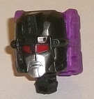

Allegiances
: Decepticon
Size
: Deluxe
Difficulty of Transformation
: Medium
Color Scheme
: Moderately dark violet,
black, and some silver, glossy brown, moderately pale brown, transparent
reddish pink, and moderately dark red
Rating
: 9.2

Vorath was Mindwipe's
Headmaster in G1, so he's now Mindwipe's "Titan Master" for Titans Return.
In robot mode Vorath has pretty much all the major details of the G1 Headmaster,
complete with a triangular ridged chest, a rather uniquely-detailed head
with a somewhat circular helmet (it can't be completely circular because
it has to be able to plug into the head port for Mindwipe's robot mode),
a visor, and mouthplate. His hands and legs are rather generic, though,
with fairly square, minimal detailing on the legs and fists molded into
the inside of the arms. Unfortunately, none of this intricate detailing
on the chest and head is easily visible, because Vorath has NO paint in
this mode, sadly, which is a bit of a turn-off given his black body and
head. As is the case with all Titan Masters, Vorath can move at the head
and back-and-forth at the shoulders, hips, and knees (with the latter two
being at one point, as the legs are one piece). In head mode he's fairly
G1-accurate, though with a slightly rounder black head. He's got some good
detailing on the sides of the front and the front forehead "vent", as well
as a red-painted visor and a silver face. Having the back two-thirds be
purple does clash a little bit with the black since in G1 Mindwipe's head
was entirely black, so I wish the arms were black to help complete that
look, but otherwise it's a pretty nice head mode.
Mindwipe is a bat in
his alternate mode, just like his G1 version, though this toy takes a bit
more creative license and makes him more of a technorganic bat, with rather
extensive, impressive mold detailing. You've got "leathery" details on
the wings, including even circular "runes", which kind of hint at Mindwipe
being a rather dark, vampire-esque character. He's got three long claws
molded on each wing, along with sharp "wing bones". There's also a LOT
of detailing on his head that is delightfully intricate and ugly, with
a segmented nose, tons of little teeth in his mouth, angular details on
the ears, and circular details and hinges near the back of the head. There's
also some angular detailing on the top of the "tail", which looks a bit
like armor-- same with the detailing on the cockpit window. With all of
thse details from a frontal view Mindwipe looks mighty impressive-- he's
got the full wingspan out, relatively proportional legs, and a pretty solid
body and head proportionally (with the cockpit for the Titan Master inside
of the main body). That's not to say that this mode is flawless, though--
there are a few downsides, some of them fairly significant. For one, his
tail is atrocious-- it's just his two weapons combined and only in the
very vague shape of a tail. It's far too broad and long (especially for
a bat), and just looks extremely odd from a side view (which is why I recommend
only looking at him from the front). The robot feet are also fairly obvious
on the back of the wings, though given how awesome the wings are otherwise
I find this a small price to pay. I'm also not so sure about the extra
wings behind the main body-- what's that about?-- and the lower arms are
fairly obvious behind the bat legs which look too thick from the sides.
The upper legs are also fairly obvious coming out from the lower sides
of the bat head to the upper wings, though one can still argue you can
see it as the beginning of the arms on the "wings". Mindwipe's colors are
mostly a moderately dark violet with some black and brown. The violet and
black go great together, and the brown is okay, but it does look a bit
off as there's two different shades of it. The rubbery brown plastic--
on the head, the little wings on the back, and the end of the wings-- is
a noticeably paler, lighter shade than the paint on the middle of the wings.
There's also a reddish-pink coloration on the cockpit, which is appropriate
for a Decepticon, and a bit of silver on the teeth, which is appreciated
on a mouth this small. Speaking of the mouth, it can move up and down--
as for the other articulation on Mindwipe, he can move back-and-forth at
each wing at three points each, and the tail can move up-and-down where
it meets the main body (though it's so blocky it pretty much has to stay
oriented back). Unfortunately the head can't move up, so you can't get
him in a "flying forward with head up" pose. The shoulders and hips and
feet are also locked in place because of the various tabs used to lock
this mode together-- so beyond the wings, this mode is unfortunately mostly
static.
Mindwipe's transformation
is quite innovative-- the bat legs fold out to become the arms, the body
flips upside down and you plug in the Titan Master to become the head,
the back wings flip around to become little wings for the shoulders in
this mode, and the bat wings fold up in a very ingenious manner to make
solid-looking (albeit actually hollow) legs. It leads to a nearly flawless
robot mode-- the chest is a little on the slim side but stil appropriate
for Mindwipe who isn't exactly Mr. Strong, the arms are quite solid and
even a little beefy yet proportional. (For another plus, though the fist
flips out from the lower arm without a flap to fold back down and cover
up the new gap in the lower arm, the gap faces
downwards
so it's
not easily visible-- something I wish Hasbro did more often.) From a side
view the lower legs may be a bit long-- and to be fair, the upper legs
are short and small proportionally-- but overall I'm easily willing to
forgive this so that Mindwipe doesn't have two huge wings hanging off his
shoulders or something. Granted, he does have two small bat wings behind
his shoulders, but these are small enough that they accentuate this mode
and aren't obvious kibble. The only really obvious piece of kibble rather,
is the bat head, which just kinda sticks out the middle of the back without
being able to fold up anywhere. Mindwipe's purple is a bit more broken
up by the black in this mode, with the brown being a bit less prevalent
and silver entering the equation a bit more on the kneecaps, face, and
weapon. The mold detailing on the robot main body is also quite good, with
several angular stripe details on the chest and more straight rectangular
"vents" on the stomach. As for Mindwipe's weapons, they're made from separating
the tail. One is a fairly standard rifle, while the larger portion of the
tail forms a rather unique weapon with two claws and two gun ports. For
articulation, Mindwipe can move at the neck, shoulders (at three points),
elbows (at two points), downwards slightly at the wrists, waist rotation,
and movement at the hips (at three points), knees, and slightly back-and-forth
at the ankles. Thus he can get into some pretty nice poses, as he's quite
well-balanced.
Titans Return Mindwipe
may have a few kibble issues-- such as the bat head in robot mode and the
robot feet, extra wings, and very weird "tail" in bat mode-- but overall
this is a very solid and unique toy from the line, with a very innovative
transformation (particularly for the bat wings), great articulation in
robot mode, excellent mold detailing and good proportions in both modes.
I do wish the bat mode could move a little more, but that's not really
possible without sacrificing some stuff that makes the robot mode so great.
Highly recommended-- one of my favorite deluxe releases from the line.
Review by Beastbot